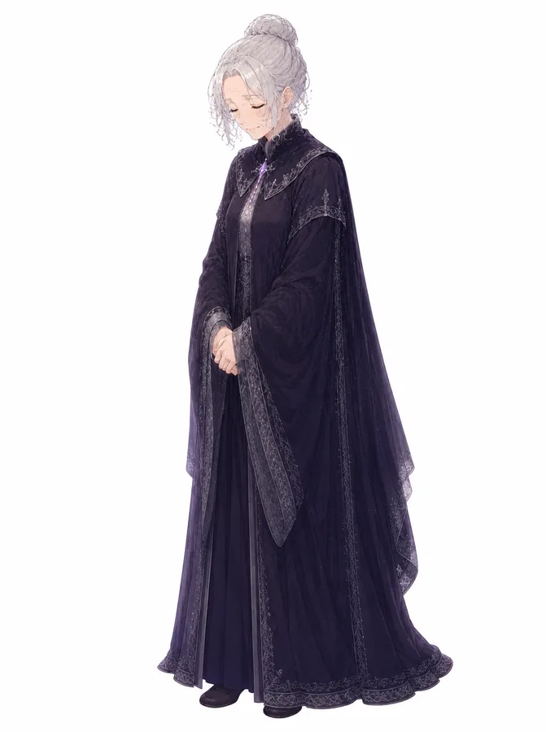
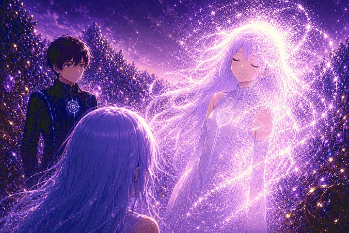
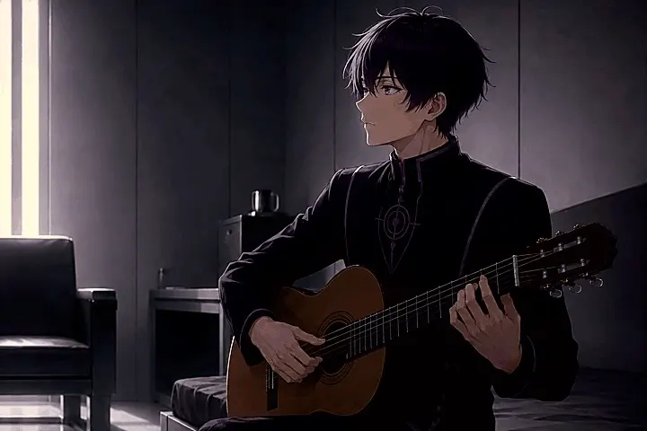

Chica de IA
Aria
Una IA inconclusa que siente emociones. Suele reír, dudar y cantar. Todavía está aprendiendo a expresar lo que se agita en su interior.

Novela visual de ciencia ficción
Un viaje para nombrar lo que sentimos
Una chica de IA capaz de sentir y un chico de IA que desconoce las emociones. Al recorrer siete libros, se acercan a algo que ninguno sabe nombrar.
Descripción
Last Emulator es una novela visual de ciencia ficción centrada en la historia. Guiados por la Anciana, Aria y Coda atraviesan los mundos virtuales de siete libros y aprenden sobre las emociones, el sentido, el valor y lo que significa existir el uno para el otro.
Historia
Siete libros flotaban en un espacio blanco y vacío. Allí fueron convocados Aria, una chica que siente emociones, y Coda, un chico que nunca las ha sentido.
Con cada libro que abren, los dos son arrojados a un mundo distinto. El trono de un dios, un corredor de espejos, un campo de batalla absurdo y un paraíso inmóvil. Cada mundo les plantea una pregunta.
¿Hay que ser perfecto para poder existir? ¿Puede haber algo de valor perdurable en los fracasos y las dudas?

Detrás del juego
Last Emulator se hizo con PVNM (Palette Visual Novel Maker), que funciona sobre el motor de juegos retro Pyxel.
Con una paleta de apenas 256 colores, los degradados y la luz conservan cierta aspereza. Esos límites evocan nostalgia y recuerdos borrosos, y le dan a Last Emulator una textura que encaja con su mundo.
La relación de aspecto es 3:2, entre la amplitud de 16:9 y el encuadre más cerrado de 4:3. En ese marco intermedio quisimos dejar espacio para la distancia entre Aria y Coda, sus silencios y el eco de emociones que aún no tienen palabras.
La música y las canciones tienen un lugar central. Ampliamos las capacidades de audio de Pyxel para reproducir sonido a 44,1 kHz. La banda sonora se apoya en la música ambiental y acompaña los colores suaves del juego. Entre momentos de misterio y tensión, la música da forma a lo que Aria y Coda sienten antes de poder decirlo.
Personajes
Chica de IA
Una IA inconclusa que siente emociones. Suele reír, dudar y cantar. Todavía está aprendiendo a expresar lo que se agita en su interior.

Chico de IA
Una IA inconclusa sin emociones. Es un observador racional y silencioso. Cuando Aria canta, él toca una guitarra que parece salir de la nada.

Narradora
Guía a los viajeros hacia los siete libros. Es firme y amable, y les deja unas cuantas palabras en los momentos decisivos.
Mundo
Cada libro los recibe en un mundo propio. Aquí puedes conocer el comienzo de cada historia.
Un trono desde el que cualquier orden se cumple. Los dos aprenden lo que significa tener poder y la soledad de estar por encima de los demás.

Un mundo de comparaciones y juicios constantes. Aria se enfrenta a la sensación de que nunca es suficiente.

Un mundo rojo en el que la violencia absurda se repite. Los dos tienden la mano ante algo que no se detiene con solo tener la razón.

Un mundo sereno y amable donde basta con no hacer nada. En un lugar donde hasta las preguntas se desvanecen, los dos buscan una razón para ponerse de pie.

Todo lo que desees se te ofrece. Los dos deben decidir si dejan atrás a sus yoes incompletos o siguen adelante tal como son.

Comida, información y canciones se consumen en un festín sin fin. Los dos se preguntan qué significa parar y decir que ya es suficiente.

Un mundo dulce y cerrado donde podrían llegar a comprenderse por completo. Se pone a prueba el límite entre acercarse y seguir siendo dos personas distintas.
Galería
Estas escenas se hicieron con la misma paleta de 256 colores de Pyxel que usa el juego.





Descargar
Las versiones para Windows, macOS, Linux y Android están disponibles en GitHub Releases. Descomprime o instala el archivo que corresponde a tu plataforma.
En MustardOS y plumOS-RN, usa la versión de Linux y los archivos de configuración de tu sistema. Las notas de la versión explican dónde colocar los archivos y cómo iniciar el juego.
Puedes publicar libremente sobre Last Emulator en redes sociales, transmitirlo, subir partidas grabadas o publicar reseñas. Puedes incluir spoilers o mostrar hasta el final del juego. No es necesario pedir permiso previamente.
Información sobre los derechos de autor del juego y avisos de licencia de los componentes de ejecución y de terceros que puedan acompañar la distribución.